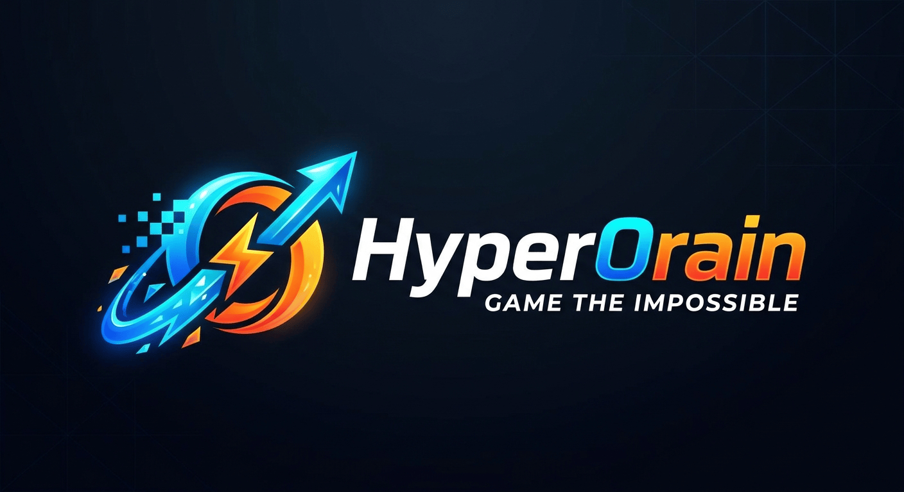

Explore with
HyperOrian
Your starting point for the HyperOrian web browser and YouTube viewer. Choose a page below to get going.

Explore with
Your starting point for the HyperOrian web browser and YouTube viewer. Choose a page below to get going.